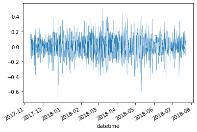

Battery Discharging¶
#exports
import numpy as np
import pandas as pd
import seaborn as sns
import matplotlib.pyplot as plt
from sklearn.pipeline import Pipeline
from sklearn.model_selection import KFold
from sklearn.metrics import make_scorer, r2_score, mean_absolute_error, mean_squared_error
from sklearn.linear_model import LinearRegression
from sklearn.ensemble import RandomForestRegressor, GradientBoostingRegressor
from statsmodels.tsa.stattools import acf
from moepy.lowess import Lowess, quantile_model
from batopt import clean, utils
import os
import random
import joblib
from ipypb import track
import FEAutils as hlp
User Inputs¶
raw_data_dir = '../data/raw'
intermediate_data_dir = '../data/intermediate'
cache_data_dir = '../data/nb-cache'
discharge_opt_model_fp = '../models/discharge_opt.sav'
Preparing Data¶
We'll start by loading the datasets, we'll interpolate the weather data which is at an hourly granularity
df = clean.combine_training_datasets(intermediate_data_dir).interpolate(limit=1)
df.tail()
| demand | pv | weather | demand_MW | irradiance_Wm-2 | panel_temp_C | pv_power_mw | solar_location1 | solar_location2 | solar_location3 | solar_location4 | solar_location5 | solar_location6 | temp_location1 | temp_location2 | temp_location3 | temp_location4 | temp_location5 | temp_location6 | holidays | |
|---|---|---|---|---|---|---|---|---|---|---|---|---|---|---|---|---|---|---|---|---|
| 2019-03-16 21:30:00+00:00 | nan | nan | nan | nan | nan | nan | nan | 0 | 0 | 0 | 0 | 0 | 0 | 6.87 | 7.035 | 6.185 | 6.76 | 8.595 | 8.755 | 0 |
| 2019-03-16 22:00:00+00:00 | nan | nan | nan | nan | nan | nan | nan | 0 | 0 | 0 | 0 | 0 | 0 | 6.73 | 6.85 | 6.03 | 6.19 | 8.55 | 8.71 | 0 |
| 2019-03-16 22:30:00+00:00 | nan | nan | nan | nan | nan | nan | nan | 0 | 0 | 0 | 0 | 0 | 0 | 6.575 | 6.695 | 5.94 | 5.97 | 8.44 | 8.595 | 0 |
| 2019-03-16 23:00:00+00:00 | nan | nan | nan | nan | nan | nan | nan | 0 | 0 | 0 | 0 | 0 | 0 | 6.42 | 6.54 | 5.85 | 5.75 | 8.33 | 8.48 | 0 |
| 2019-03-16 23:30:00+00:00 | nan | nan | nan | nan | nan | nan | nan | 0 | 0 | 0 | 0 | 0 | 0 | 6.42 | 6.54 | 5.85 | 5.75 | 8.33 | 8.48 | 0 |
Next we'll construct our features dataframe
#exports
def construct_df_discharge_features(df, dt_rng=None):
if dt_rng is None:
dt_rng = pd.date_range(df.index.min(), df.index.max(), freq='30T')
df_features = pd.DataFrame(index=dt_rng)
# Filtering for the temperature weather data
temp_loc_cols = df.columns[df.columns.str.contains('temp_location')]
df_features.loc[df.index, temp_loc_cols] = df[temp_loc_cols].copy()
df_features = df_features.ffill(limit=1)
df_features['spatial_avg_temp'] = df_features.mean(axis=1) # Should look into excluding temp_location5 and temp_location6
df_features['daily_avg_temp'] = pd.Series(df_features.index.date, index=df_features.index).map(df_features['spatial_avg_temp'].groupby(df_features.index.date).mean().to_dict())
# Adding lagged demand
df_features['SP_demand_7d_lag'] = df['demand_MW'].shift(48*7)
s_evening_demand = df['demand_MW'].between_time('15:30', '21:00')
dt_to_lagged_evening_avg = s_evening_demand.groupby(s_evening_demand.index.date).mean().shift(7).to_dict()
dt_to_lagged_evening_max = s_evening_demand.groupby(s_evening_demand.index.date).max().shift(7).to_dict()
df_features['evening_demand_avg_7d_lag'] = pd.Series(df_features.index.date, index=df_features.index).map(dt_to_lagged_evening_avg)
df_features['evening_demand_max_7d_lag'] = pd.Series(df_features.index.date, index=df_features.index).map(dt_to_lagged_evening_max)
# Adding datetime features
dts = df_features.index.tz_convert('Europe/London') # We want to use the 'behavioural' timezone
df_features['weekend'] = dts.dayofweek.isin([5, 6]).astype(int)
df_features['hour'] = dts.hour + dts.minute/60
df_features['doy'] = dts.dayofyear
df_features['dow'] = dts.dayofweek
# Removing NaN values
df_features = df_features.dropna()
return df_features
df_features = construct_df_discharge_features(df)
df_features.tail()
| temp_location1 | temp_location2 | temp_location3 | temp_location4 | temp_location5 | temp_location6 | spatial_avg_temp | daily_avg_temp | SP_demand_7d_lag | evening_demand_avg_7d_lag | evening_demand_max_7d_lag | weekend | hour | doy | dow | |
|---|---|---|---|---|---|---|---|---|---|---|---|---|---|---|---|
| 2019-03-16 21:30:00+00:00 | 6.87 | 7.035 | 6.185 | 6.76 | 8.595 | 8.755 | 7.36667 | 9.56998 | 3.2 | 3.94833 | 4.54 | 1 | 21.5 | 75 | 5 |
| 2019-03-16 22:00:00+00:00 | 6.73 | 6.85 | 6.03 | 6.19 | 8.55 | 8.71 | 7.17667 | 9.56998 | 2.97 | 3.94833 | 4.54 | 1 | 22 | 75 | 5 |
| 2019-03-16 22:30:00+00:00 | 6.575 | 6.695 | 5.94 | 5.97 | 8.44 | 8.595 | 7.03583 | 9.56998 | 2.69 | 3.94833 | 4.54 | 1 | 22.5 | 75 | 5 |
| 2019-03-16 23:00:00+00:00 | 6.42 | 6.54 | 5.85 | 5.75 | 8.33 | 8.48 | 6.895 | 9.56998 | 2.51 | 3.94833 | 4.54 | 1 | 23 | 75 | 5 |
| 2019-03-16 23:30:00+00:00 | 6.42 | 6.54 | 5.85 | 5.75 | 8.33 | 8.48 | 6.895 | 9.56998 | 2.33 | 3.94833 | 4.54 | 1 | 23.5 | 75 | 5 |
We'll now create demand and features time-series with the same date indexes
dt_idx = pd.date_range(df_features.index.min(), df['demand_MW'].dropna().index.max()-pd.Timedelta(minutes=30), freq='30T')
s_demand = df.loc[dt_idx, 'demand_MW']
df_features = df_features.loc[dt_idx]
Exploratory Demand Analysis¶
We'll start by exploring the relationship between time of day and demand, in this instance fitting a quantile LOWESS model to get a probabilistic view of likely loads at specific times of day
#exports
def estimate_daily_demand_quantiles(x, y, x_pred = np.linspace(0, 23.5, 100), **model_kwargs):
# Fitting the model
df_quantiles = quantile_model(x, y, x_pred=x_pred, **model_kwargs)
# Cleaning names and sorting for plotting
df_quantiles.columns = [f'p{int(col*100)}' for col in df_quantiles.columns]
df_quantiles = df_quantiles[df_quantiles.columns[::-1]]
return df_quantiles
dts = df.index.tz_convert('Europe/London')
x = dts.hour + dts.minute/60
y = df['demand_MW'].values
rerun_daily_demand_model = False
daily_demand_filename = 'daily_demand_quantile_model_results.csv'
if (rerun_daily_demand_model == True) or (daily_demand_filename not in os.listdir(cache_data_dir)):
df_quantiles = estimate_daily_demand_quantiles(x, y, frac=0.2, num_fits=48, robust_iters=3)
df_quantiles.to_csv(f'{cache_data_dir}/{daily_demand_filename}')
else:
df_quantiles = pd.read_csv(f'{cache_data_dir}/{daily_demand_filename}', index_col='x')
df_quantiles.head()
| ('Unnamed: 0_level_0', 'x') | ('p90', 'Unnamed: 1_level_1') | ('p80', 'Unnamed: 2_level_1') | ('p70', 'Unnamed: 3_level_1') | ('p60', 'Unnamed: 4_level_1') | ('p50', 'Unnamed: 5_level_1') | ('p40', 'Unnamed: 6_level_1') | ('p30', 'Unnamed: 7_level_1') | ('p20', 'Unnamed: 8_level_1') | ('p10', 'Unnamed: 9_level_1') |
|---|---|---|---|---|---|---|---|---|---|
| 0 | 2.79849 | 2.71229 | 2.64641 | 2.56191 | 2.39701 | 2.10668 | 1.88967 | 1.81977 | 1.77097 |
| 0.237374 | 2.76187 | 2.67597 | 2.60871 | 2.5275 | 2.3697 | 2.09069 | 1.86875 | 1.79585 | 1.74577 |
| 0.474747 | 2.72532 | 2.63973 | 2.57116 | 2.49312 | 2.34246 | 2.0744 | 1.84797 | 1.77185 | 1.72058 |
| 0.712121 | 2.68871 | 2.60348 | 2.53355 | 2.45863 | 2.31533 | 2.05794 | 1.82746 | 1.74759 | 1.69522 |
| 0.949495 | 2.65212 | 2.56737 | 2.49614 | 2.42416 | 2.28829 | 2.04086 | 1.80704 | 1.72319 | 1.6696 |
We'll now visualise these quantile fits alongside the raw data
N.b. the x values have been slightly jittered in order to make their distribution easier to visualise
x_jittered = x + (np.random.uniform(size=len(x)) - 0.5)/2.5
# Plotting
fig, ax = plt.subplots(dpi=250)
ax.scatter(x_jittered, y, s=0.2, color='k', alpha=0.5)
df_quantiles.plot(cmap='viridis', legend=False, ax=ax)
hlp.hide_spines(ax)
ax.legend(frameon=False, bbox_to_anchor=(1, 0.9), title='Percentiles')
ax.set_xlabel('Time of Day')
ax.set_ylabel('Demand (MW)')
ax.set_xlim(0, 24)
ax.set_ylim(1, 6)
fig.savefig('../img/daily_demand_profile.png')
One of the issues with the quantile fit is that it hides the a lot of the spikiness in individual daily profiles, here we'll create a function for randomly sampling days so we can visualise them alongside each other.
#exports
reset_idx_dt = lambda s, dt='2020-01-01': s.index - (s.index[0]-pd.to_datetime(dt, utc=True))
def sample_random_day(s):
random_dt = random.choice(s.index.date)
s_sample_dt = s.loc[str(random_dt)]
return s_sample_dt
def sample_random_days(s, num_days=5):
df_sample_dts = pd.DataFrame()
for _ in range(num_days):
s_sample_dt = sample_random_day(s)
dt = str(s_sample_dt.index[0].date())
s_sample_dt.index = reset_idx_dt(s_sample_dt)
df_sample_dts[dt] = s_sample_dt
df_sample_dts = df_sample_dts.sort_index(axis=1)
return df_sample_dts
df_sample_dts = sample_random_days(s_demand)
# Plotting
fig, ax = plt.subplots(dpi=150)
df_sample_dts.plot(ax=ax)
ax.legend(frameon=False)
hlp.hide_spines(ax)
ax.set_xlabel('')
ax.set_ylabel('Demand (MW)')
_ = plt.setp(ax.get_xmajorticklabels(), visible=False)
We'll also check the auto-correlation of the demand time-series, particularly in regard to the the correlation of the most recent value with the value from one week prior (what will be available for the test data)
acf_array = acf(s_demand, fft=True, nlags=48*7*2)
day_blocks = [0] + list(np.array([[i+1]*48 for i in range(14)]).reshape(-1))
s_acf_days_max = pd.Series(acf_array).groupby(day_blocks).max()
corr_with_last_weeks_SP = s_acf_days_max.loc[7]
# Plotting
fig, ax = plt.subplots()
s_acf_days_max.plot.bar(ax=ax)
ax.plot([-0.5, 14.5], [corr_with_last_weeks_SP, corr_with_last_weeks_SP], 'k--')
ax.set_ylim(0.7, 1)
ax.set_xlabel('Day')
ax.set_ylabel('Correlation')
hlp.hide_spines(ax)
We'll also fit a quantile model for the relationship between temperature and demand
x = df[df.columns[df.columns.str.contains('temp_location')]].mean(axis=1).values
y = df['demand_MW'].values
rerun_temp_demand_model = False
temp_demand_filename = 'temp_demand_quantile_model_results.csv'
if (rerun_temp_demand_model == True) or (temp_demand_filename not in os.listdir(cache_data_dir)):
df_quantiles = estimate_daily_demand_quantiles(x, y, frac=0.35, num_fits=48, robust_iters=5)
df_quantiles.to_csv(f'{cache_data_dir}/{temp_demand_filename}')
else:
df_quantiles = pd.read_csv(f'{cache_data_dir}/{temp_demand_filename}', index_col='x')
df_quantiles.head()
| ('Unnamed: 0_level_0', 'x') | ('p90', 'Unnamed: 1_level_1') | ('p80', 'Unnamed: 2_level_1') | ('p70', 'Unnamed: 3_level_1') | ('p60', 'Unnamed: 4_level_1') | ('p50', 'Unnamed: 5_level_1') | ('p40', 'Unnamed: 6_level_1') | ('p30', 'Unnamed: 7_level_1') | ('p20', 'Unnamed: 8_level_1') | ('p10', 'Unnamed: 9_level_1') |
|---|---|---|---|---|---|---|---|---|---|
| 0 | 4.97915 | 4.54269 | 4.2198 | 3.87288 | 3.37484 | 2.90171 | 2.70959 | 2.59651 | 2.46055 |
| 0.237374 | 4.96727 | 4.52208 | 4.20217 | 3.86098 | 3.37012 | 2.89377 | 2.69721 | 2.58177 | 2.44486 |
| 0.474747 | 4.95515 | 4.50144 | 4.18453 | 3.84911 | 3.36556 | 2.88588 | 2.685 | 2.56718 | 2.42925 |
| 0.712121 | 4.94284 | 4.48071 | 4.16686 | 3.83725 | 3.3611 | 2.87787 | 2.67285 | 2.55265 | 2.41369 |
| 0.949495 | 4.93029 | 4.45984 | 4.14914 | 3.82542 | 3.35674 | 2.86969 | 2.66073 | 2.53816 | 2.39816 |
Which we'll visualise similarly to the daily demand profile
fig, ax = plt.subplots(dpi=250)
ax.scatter(x, y, s=0.2, color='k', alpha=0.5)
df_quantiles.plot(cmap='viridis', legend=False, ax=ax)
hlp.hide_spines(ax)
ax.legend(frameon=False, bbox_to_anchor=(1, 0.25), title='Percentiles')
ax.set_xlabel('Temperature (degC)')
ax.set_ylabel('Demand (MW)')
ax.set_xlim(0, 24)
ax.set_ylim(1, 6)
fig.savefig('../img/temp_demand_profile.png')
# ^ Should use daily average (or evening block) instead of each SP
Strategy Development with Perfect Foresight¶
Here we'll develop a charging strategy for when we have perfect foresight, starting by sampling a random day from the demand series and then extracting the evening profile as an array from that
#exports
def extract_evening_demand_profile(s_demand_sample_dt, start_time='15:30', end_time='20:30'):
dt = str(s_demand_sample_dt.index[0].date())
evening_demand_profile = s_demand_sample_dt[f'{dt} {start_time}':f'{dt} {end_time}'].values
return evening_demand_profile
evening_demand_profile = sample_random_day(s_demand).pipe(extract_evening_demand_profile)
plt.plot(evening_demand_profile)
[<matplotlib.lines.Line2D at 0x2051e5fe790>]
We'll then write an algorithm for peak flattening
#exports
def flatten_peak(evening_demand_profile, charge=6, time_unit=0.5):
peak = max(evening_demand_profile)
adj_evening_demand_profile = evening_demand_profile.copy()
while charge > 0:
num_periods_plateaued = (evening_demand_profile>=peak).sum()
# If the evening demand profile has been fully flattened
# then split up the remaining charge equally across all SPs
fully_flattened = len(set(adj_evening_demand_profile)) == 1
if fully_flattened == True:
remaining_discharge_rate_for_each_SP = (1/time_unit)*charge/len(adj_evening_demand_profile)
adj_evening_demand_profile -= remaining_discharge_rate_for_each_SP
charge = 0
break
# If there is still a peak then determine the next highest value
else:
peak = max(adj_evening_demand_profile)
highest_non_peak = max(adj_evening_demand_profile[peak>adj_evening_demand_profile])
proposed_additional_discharge = time_unit*(adj_evening_demand_profile.sum() - np.minimum(adj_evening_demand_profile, highest_non_peak).sum())
# if its possible to reduce the peak to the next highest value do so
if charge >= proposed_additional_discharge:
adj_evening_demand_profile = np.minimum(adj_evening_demand_profile, highest_non_peak)
charge -= proposed_additional_discharge
# If the capacity constraints are broken when reducing to the next
# highest value then just lower the current peak as far as possible
else:
new_peak = peak - ((1/time_unit)*charge/(num_periods_plateaued+1))
adj_evening_demand_profile = np.minimum(adj_evening_demand_profile, new_peak)
charge = 0
return adj_evening_demand_profile
adj_evening_demand_profile = flatten_peak(evening_demand_profile)
plt.plot(evening_demand_profile)
plt.plot(adj_evening_demand_profile)
[<matplotlib.lines.Line2D at 0x2051e599f70>]
Which we can deduct from the original evening profile to construct the discharge profile
#exports
construct_discharge_profile = lambda evening_demand_profile, adj_evening_demand_profile: -(evening_demand_profile - adj_evening_demand_profile)
discharge_profile = construct_discharge_profile(evening_demand_profile, adj_evening_demand_profile)
plt.plot(discharge_profile)
[<matplotlib.lines.Line2D at 0x2051e53a490>]

Rather than the sample day we've just used we'll now repeat this step for all days we have demand data on, returning a series of the new discharge values that can be easily added to the charging values
#exports
def construct_discharge_s(s_demand, start_time='15:30', end_time='20:30'):
s_discharge = pd.Series(index=s_demand.index, dtype=float).fillna(0)
for dt in s_demand.index.strftime('%Y-%m-%d').unique():
evening_demand_profile = s_demand[dt].pipe(extract_evening_demand_profile)
adj_evening_demand_profile = flatten_peak(evening_demand_profile)
discharge_profile = construct_discharge_profile(evening_demand_profile, adj_evening_demand_profile)
s_discharge[f'{dt} {start_time}':f'{dt} {end_time}'] = discharge_profile
return s_discharge
s_discharge = construct_discharge_s(s_demand, start_time='15:30', end_time='20:30')
s_discharge.iloc[:48*7].plot()
<AxesSubplot:>
We can also use this discharging profile to see what the new peaks look like
s_demand.iloc[:48*7].plot()
(s_demand+s_discharge).iloc[:48*7].plot()
<AxesSubplot:>
Strategy Development under Uncertainty¶
Our overall approach can be thought of as follows:
- Generate an optimal discharge profile under perfect foresight
- Train a regression model to emulate the optimal discharge profile
- Clean profile to ensure that constraints aren't broken and the full 6 MWh is fully utilised
We've generated our optimal discharge profile, now we're ready to train the model. We'll first split up our X and y values, filtering only for those that fall into the evening period
#exports
def extract_evening_datetimes(df):
hour = df.index.hour + df.index.minute/60
evening_datetimes = df.index[(20.5>=hour) & (15.5<=hour)]
return evening_datetimes
evening_datetimes = extract_evening_datetimes(df_features)
X = df_features.loc[evening_datetimes].values
y = s_discharge.loc[evening_datetimes].values
We'll create a basic prediction using a standard linear model
df_pred = clean.generate_kfold_preds(X, y, LinearRegression(), index=evening_datetimes)
df_pred.head()
| pred | true | |
|---|---|---|
| 2017-11-10 15:30:00+00:00 | -0.300207 | -0.125455 |
| 2017-11-10 16:00:00+00:00 | -0.554003 | -0.565455 |
| 2017-11-10 16:30:00+00:00 | -1.03486 | -1.12546 |
| 2017-11-10 17:00:00+00:00 | -1.55369 | -1.58546 |
| 2017-11-10 17:30:00+00:00 | -1.65075 | -1.66545 |
However, in this approach there's nothing to enforce the battery constraints, namely maximum total discharge and instantaneous discharge rate. This becomes apparant when we visualise the distribution of total discharge volumes each evening.
s_daily_discharge = df_pred['pred'].groupby(df_pred.index.date).sum()
sns.distplot(s_daily_discharge)
C:\Users\Ayrto\anaconda3\envs\batopt\lib\site-packages\seaborn\distributions.py:2557: FutureWarning: `distplot` is a deprecated function and will be removed in a future version. Please adapt your code to use either `displot` (a figure-level function with similar flexibility) or `histplot` (an axes-level function for histograms).
warnings.warn(msg, FutureWarning)
<AxesSubplot:xlabel='pred', ylabel='Density'>
To account for this we can normalise each daily discharge profile by the ratio between the current total discharge and the maximum current discharge
#exports
def normalise_total_discharge(s_pred, charge=6, time_unit=0.5):
s_daily_discharge = s_pred.groupby(s_pred.index.date).sum()
for date, total_discharge in s_daily_discharge.items():
s_pred.loc[str(date)] *= -charge/(time_unit*total_discharge)
return s_pred
s_daily_discharge = (df_pred
['pred']
.pipe(normalise_total_discharge)
.groupby(df_pred.index.date)
.sum()
.round(10)
)
s_daily_discharge.value_counts()
-12.0 485
Name: pred, dtype: int64
We also need to ensure that the discharge rate remains within the bounds of the problem definition, i.e. no greater than -2.5 MW
#exports
clip_discharge_rate = lambda s_pred, max_rate=-2.5, min_rate=0: s_pred.clip(lower=max_rate, upper=min_rate)
s_pred = df_pred['pred'].pipe(clip_discharge_rate)
s_pred.head()
2017-11-10 15:30:00+00:00 -0.297164
2017-11-10 16:00:00+00:00 -0.548387
2017-11-10 16:30:00+00:00 -1.024373
2017-11-10 17:00:00+00:00 -1.537942
2017-11-10 17:30:00+00:00 -1.634021
Name: pred, dtype: object
We'll now combine these post prediction processing steps into a single function, ready to use in our model evaluation
Note that the normalisation must come after the clipping. Otherwise the total charge constraint can be violated if the model predicts a discharge > 0
#exports
post_pred_discharge_proc_func = lambda s_pred: (s_pred
.pipe(clip_discharge_rate)
.pipe(normalise_total_discharge)
)
post_pred_discharge_proc_func(s_pred).groupby(s_pred.index.date).sum().round(10).value_counts()
-12.0 485
Name: pred, dtype: int64
We'll create a new function that evaluates our discharge profile in terms of the peak reduction achieved relative the reduction using an optimal discharge profile. We'll then use this and our standard mae and rmse metrics to evaluate some different models.
#exports
def construct_peak_reduction_calculator(s_demand, evening_datetimes=None, scorer=False):
if evening_datetimes is None:
evening_datetimes = extract_evening_datetimes(s_demand)
def calc_peak_reduction(y, y_pred):
# Checking evening datetimes
if hasattr(y_pred, 'index') == True:
evening_datetimes = extract_evening_datetimes(y_pred)
assert y_pred.shape[0] == s_demand.loc[evening_datetimes].shape[0], f'The prediction series must be the same length as the number of evening datetimes in the main dataframe, {y_pred.shape[0]} {s_demand.loc[evening_datetimes].shape[0]}'
# Post-processing the discharge profile to handle constraints
y_pred = post_pred_discharge_proc_func(y_pred)
# Identifying daily peaks
s_old_peaks = s_demand.loc[evening_datetimes].groupby(evening_datetimes.date).max()
s_new_peaks = (s_demand.loc[evening_datetimes]+y_pred).groupby(evening_datetimes.date).max()
s_optimal_peaks = (s_demand.loc[evening_datetimes]+y).groupby(evening_datetimes.date).max()
# Calculating the peak reduction
s_new_pct_peak_reduction = 100*(s_old_peaks-s_new_peaks)/s_old_peaks
s_optimal_pct_peak_reduction = 100*(s_old_peaks-s_optimal_peaks)/s_old_peaks
# after cleaning anomalous demand data should add an assert to check for non finite values
pct_of_max_possible_reduction = 100*(s_new_pct_peak_reduction.replace(np.inf, np.nan).dropna().mean()/
s_optimal_pct_peak_reduction.replace(np.inf, np.nan).dropna().mean())
return pct_of_max_possible_reduction
if scorer == True:
return make_scorer(calc_peak_reduction)
else:
return calc_peak_reduction
def evaluate_discharge_models(df, models, features_kwargs={}):
df_features = construct_df_discharge_features(df, **features_kwargs)
s_discharge = construct_discharge_s(df['demand_MW'], start_time='15:30', end_time='20:30')
evening_datetimes = extract_evening_datetimes(df_features)
X = df_features.loc[evening_datetimes].values
y = s_discharge.loc[evening_datetimes].values
model_scores = dict()
peak_reduction_calc = construct_peak_reduction_calculator(s_demand=df['demand_MW'], evening_datetimes=evening_datetimes)
for model_name, model in track(models.items()):
df_pred = clean.generate_kfold_preds(X, y, model, index=evening_datetimes)
df_pred['pred'] = post_pred_discharge_proc_func(df_pred['pred'])
model_scores[model_name] = {
'pct_optimal_reduction': peak_reduction_calc(df_pred['true'], df_pred['pred']),
'optimal_discharge_mae': mean_absolute_error(df_pred['true'], df_pred['pred']),
'optimal_discharge_rmse': np.sqrt(mean_squared_error(df_pred['true'], df_pred['pred']))
}
df_model_scores = pd.DataFrame(model_scores)
df_model_scores.index.name = 'metric'
df_model_scores.columns.name = 'model'
return df_model_scores
models = {
'std_linear': LinearRegression(),
'random_forest': RandomForestRegressor(),
'boosted': GradientBoostingRegressor()
}
rerun_discharge_opt_model = False
discharge_opt_filename = 'discharge_optimisation_model_results.csv'
if (rerun_discharge_opt_model == True) or (discharge_opt_filename not in os.listdir(cache_data_dir)):
df_model_scores = evaluate_discharge_models(df.loc[df_features.index], models)
df_model_scores.to_csv(f'{cache_data_dir}/{discharge_opt_filename}')
else:
df_model_scores = pd.read_csv(f'{cache_data_dir}/{discharge_opt_filename}', index_col='metric')
df_model_scores
| ('Unnamed: 0_level_0', 'metric') | ('std_linear', 'Unnamed: 1_level_1') | ('random_forest', 'Unnamed: 2_level_1') | ('boosted', 'Unnamed: 3_level_1') |
|---|---|---|---|
| pct_optimal_reduction | 85.6542 | 87.98 | 86.787 |
| optimal_discharge_mae | 0.121212 | 0.092669 | 0.100329 |
| optimal_discharge_rmse | 0.16245 | 0.121869 | 0.131338 |
We'll then generate a prediction time-series using the best performing model
rerun_discharge_pred_model = False
discharge_pred_filename = 'discharge_optimisation_model_pred.csv'
if (rerun_discharge_pred_model == True) or (discharge_pred_filename not in os.listdir(cache_data_dir)):
top_model = df_model_scores.T['pct_optimal_reduction'].idxmax()
df_pred = clean.generate_kfold_preds(X, y, models[top_model], index=evening_datetimes)
df_pred['pred'] = post_pred_discharge_proc_func(df_pred['pred'])
df_pred.to_csv(f'{cache_data_dir}/{discharge_pred_filename}')
else:
df_pred = pd.read_csv(f'{cache_data_dir}/{discharge_pred_filename}')
df_pred['datetime'] = pd.to_datetime(df_pred['datetime'], utc=True)
df_pred = df_pred.set_index('datetime')
df_pred.head()
| ('Unnamed: 0_level_0', 'datetime') | ('pred', 'Unnamed: 1_level_1') | ('true', 'Unnamed: 2_level_1') |
|---|---|---|
| 2017-11-10 15:30:00+00:00 | -0.213378 | -0.125455 |
| 2017-11-10 16:00:00+00:00 | -0.735541 | -0.565455 |
| 2017-11-10 16:30:00+00:00 | -1.19438 | -1.12546 |
| 2017-11-10 17:00:00+00:00 | -1.57704 | -1.58546 |
| 2017-11-10 17:30:00+00:00 | -1.61426 | -1.66545 |
We'll quickly check the residuals time-series for model-drift
s_residuals = df_pred.diff(1, axis=1).dropna(axis=1).iloc[:, 0]
s_residuals.plot(linewidth=0.3)
<AxesSubplot:xlabel='datetime'>

As well as the scatter-plot between the true and estimated optimal charging rates
plt.scatter(df_pred['true'], df_pred['pred'], s=1)
plt.xlabel('Obervation')
plt.ylabel('Prediction')
Text(0, 0.5, 'Prediction')

Pipeline Integration Helpers¶
#exports
def prepare_training_input_data(intermediate_data_dir):
# Loading input data
df = clean.combine_training_datasets(intermediate_data_dir).interpolate(limit=1)
df_features = construct_df_discharge_features(df)
# Filtering for overlapping feature and target data
dt_idx = pd.date_range(df_features.index.min(), df['demand_MW'].dropna().index.max()-pd.Timedelta(minutes=30), freq='30T')
s_demand = df.loc[dt_idx, 'demand_MW']
df_features = df_features.loc[dt_idx]
# Constructing the discharge series
s_discharge = construct_discharge_s(s_demand, start_time='15:30', end_time='20:30')
# Filtering for evening datetimes
evening_datetimes = extract_evening_datetimes(df_features)
X = df_features.loc[evening_datetimes]
y = s_discharge.loc[evening_datetimes]
return X, y
X, y = prepare_training_input_data(intermediate_data_dir)
X.shape, y.shape
((5335, 15), (5335,))
#exports
def fit_and_save_model(X, y, discharge_opt_model_fp, model_class=RandomForestRegressor, **model_params):
model = model_class(**model_params)
model.fit(X, y)
with open(discharge_opt_model_fp, 'wb') as fp:
joblib.dump(model, fp)
return
%%time
fit_and_save_model(X, y, discharge_opt_model_fp)
Wall time: 6.65 s
#exports
def load_trained_model(discharge_opt_model_fp):
with open(discharge_opt_model_fp, 'rb') as fp:
model = joblib.load(fp)
return model
%%time
model = load_trained_model(discharge_opt_model_fp)
model
Wall time: 176 ms
RandomForestRegressor()
#exports
def load_latest_submission_template(raw_data_dir, latest_submission_template_name=None):
if latest_submission_template_name is None:
latest_submission_template_name = max([filename for filename in os.listdir(raw_data_dir) if 'teamname_set' in filename])
df_submission_template = pd.read_csv(f'{raw_data_dir}/{latest_submission_template_name}')
df_submission_template['datetime'] = pd.to_datetime(df_submission_template['datetime'], utc=True)
df_submission_template = df_submission_template.set_index('datetime')
return df_submission_template
def prepare_test_feature_data(raw_data_dir, intermediate_data_dir, test_start_date=None, test_end_date=None):
# Loading input data
df_features = (clean
.combine_training_datasets(intermediate_data_dir)
.interpolate(limit=1)
.pipe(construct_df_discharge_features)
)
# Loading default index (latest submission)
if test_end_date is None or test_start_date is None:
index = load_latest_submission_template(raw_data_dir).index
else:
index = df_features[test_start_date:test_end_date].index
# Filtering feature data on submission datetimes
df_features = df_features.loc[index]
return df_features
df_features = prepare_test_feature_data(raw_data_dir, intermediate_data_dir)
df_features.head()
| ('Unnamed: 0_level_0', 'datetime') | ('temp_location1', 'Unnamed: 1_level_1') | ('temp_location2', 'Unnamed: 2_level_1') | ('temp_location3', 'Unnamed: 3_level_1') | ('temp_location4', 'Unnamed: 4_level_1') | ('temp_location5', 'Unnamed: 5_level_1') | ('temp_location6', 'Unnamed: 6_level_1') | ('spatial_avg_temp', 'Unnamed: 7_level_1') | ('daily_avg_temp', 'Unnamed: 8_level_1') | ('SP_demand_7d_lag', 'Unnamed: 9_level_1') | ('evening_demand_avg_7d_lag', 'Unnamed: 10_level_1') | ('evening_demand_max_7d_lag', 'Unnamed: 11_level_1') | ('weekend', 'Unnamed: 12_level_1') | ('hour', 'Unnamed: 13_level_1') | ('doy', 'Unnamed: 14_level_1') | ('dow', 'Unnamed: 15_level_1') |
|---|---|---|---|---|---|---|---|---|---|---|---|---|---|---|---|
| 2019-03-10 00:00:00+00:00 | 9.69 | 8.98 | 7.01 | 5.83 | 11.59 | 11.22 | 9.05333 | 8.16849 | 2.43 | 4.22667 | 4.85 | 1 | 0 | 69 | 6 |
| 2019-03-10 00:30:00+00:00 | 10.45 | 9.91 | 7.74 | 5.745 | 11.8 | 11.425 | 9.51167 | 8.16849 | 2.4 | 4.22667 | 4.85 | 1 | 0.5 | 69 | 6 |
| 2019-03-10 01:00:00+00:00 | 11.21 | 10.84 | 8.47 | 5.66 | 12.01 | 11.63 | 9.97 | 8.16849 | 2.28 | 4.22667 | 4.85 | 1 | 1 | 69 | 6 |
| 2019-03-10 01:30:00+00:00 | 11.225 | 11.08 | 9.57 | 5.785 | 12.075 | 11.69 | 10.2375 | 8.16849 | 2.11 | 4.22667 | 4.85 | 1 | 1.5 | 69 | 6 |
| 2019-03-10 02:00:00+00:00 | 11.24 | 11.32 | 10.67 | 5.91 | 12.14 | 11.75 | 10.505 | 8.16849 | 2.03 | 4.22667 | 4.85 | 1 | 2 | 69 | 6 |
#exports
def optimise_test_discharge_profile(raw_data_dir, intermediate_data_dir, discharge_opt_model_fp, test_start_date=None, test_end_date=None):
df_features = prepare_test_feature_data(raw_data_dir, intermediate_data_dir, test_start_date=test_start_date, test_end_date=test_end_date)
evening_datetimes = extract_evening_datetimes(df_features)
X_test = df_features.loc[evening_datetimes].values
model = load_trained_model(discharge_opt_model_fp)
discharge_profile = model.predict(X_test)
s_discharge_profile = pd.Series(discharge_profile, index=evening_datetimes)
s_discharge_profile = s_discharge_profile.reindex(df_features.index).fillna(0)
s_discharge_profile = post_pred_discharge_proc_func(s_discharge_profile)
return s_discharge_profile
s_discharge_profile = optimise_test_discharge_profile(raw_data_dir, intermediate_data_dir, discharge_opt_model_fp)
s_discharge_profile.plot()
<AxesSubplot:xlabel='datetime'>
Finally we'll export the relevant code to our batopt module